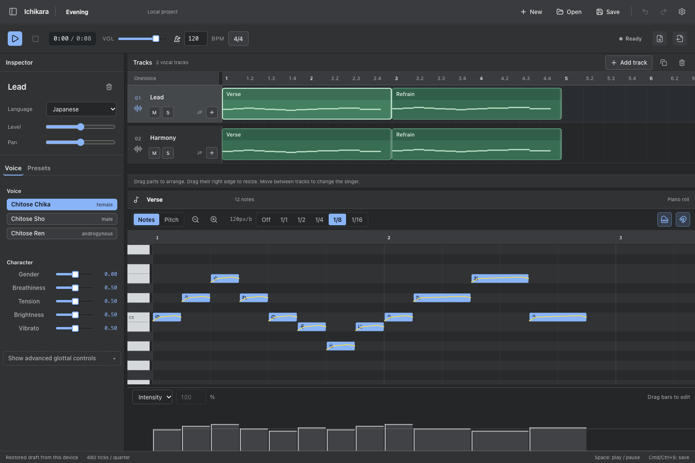

Ichikara
Ichikara
Write and arrange songs in the browser, or synthesize singing from your own
TypeScript app. Ichikara generates voices from parameters rather than recorded
voicebanks.
LF Glottal
Cross-Language Open Editor
Quick Start GitHub
Choose a Chitose voice, then adjust its gender, breathiness, brightness, tension,
and vibrato. Each vocal track has its own voice and language. The same controls
are available through scaleVoice() in the library.

Song editor
Arrange vocal parts across tracks, edit lyrics and phonemes, draw pitch curves,
and set intensity or velocity with note-length bars. Resize the workspace to
fit your song and follow playback in page or smooth mode.
Save as .ichi to retain voices, expression, parts, and mix settings. Export WAV
for audio or USTX to continue in another editor.
Features
Liljencrants-Fant glottal pulses with jitter, shimmer, aspiration noise, and DC
blocking. Control open quotient, speed quotient, tenseness, and power.
Resonators and anti-resonators model the vocal tract, interpolating between
phoneme targets as the voice moves through a lyric.
Japanese hiragana, romaji, and kanji; English text with CMUDict; and Mandarin
pinyin. Add another language through registerLanguage.
Play chunks as they render through Web Audio. Native projects include track
placement, mute/solo, gain, and stereo pan.
Read and write UST, USTX, VPR, VSQX, MIDI, MusicXML, and other score formats through
UtaFormatix. Keep an .ichi copy for native settings and region boundaries.
Start with Chitose Chika, Sho, or Ren. Use the editor’s voice controls or
buildVoice() and scaleVoice() to change the sound.
Quick Example
import { writeFileSync } from "node:fs";
import { renderScore, chitoseChika, encodeWav, type Score } from "@audiflo/ichikara";
const score: Score = {
tempos: [{ tick: 0, tempo: 120 }],
resolution: 480,
notes: [
{ lyric: "こ", noteNum: 60, length: 480 },
{ lyric: "ん", noteNum: 62, length: 480 },
{ lyric: "に", noteNum: 64, length: 480 },
{ lyric: "ち", noteNum: 65, length: 480 },
{ lyric: "は", noteNum: 67, length: 960 },
],
};
const chunks = await renderScore(score, chitoseChika, "jp");
writeFileSync("hello.wav", Buffer.from(encodeWav(chunks)));
Call playback from a user action, using the score from the Node.js tab:
import { streamScore, chitoseChika, StreamPlayer, type Score } from "@audiflo/ichikara";
const player = new StreamPlayer();
async function playPhrase(score: Score): Promise<void> {
await player.play(streamScore(score, chitoseChika, "jp"));
}
Pass this voice to renderScore or streamScore with your score and language:
import { buildVoice, scaleVoice } from "@audiflo/ichikara";
const brightAlto = scaleVoice(
buildVoice({
name: "Bright Alto",
formant: { scale: 1.25, shift: 2, bandwidth: 1.0 },
}),
{
gender: 0.3,
breathiness: 0.2,
vibratoAmount: 0.8,
},
);
Installation
npm install @audiflo/ichikara
Next Steps
Getting Started
Edit a song in the browser or render a phrase with the library.
Song EditorQuick Start
Installation
Reference
Document types, synthesis functions, and voice settings.
API ReferenceNative Projects
Voice Config